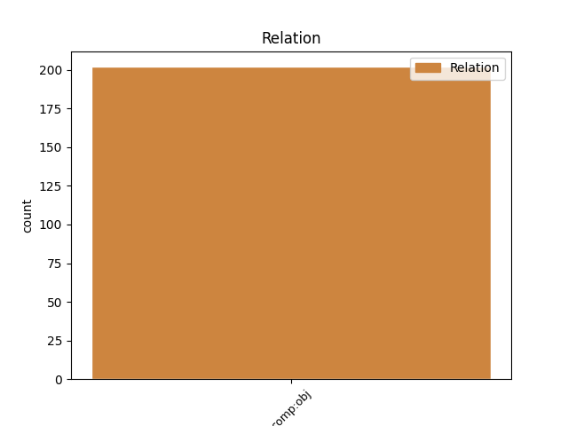
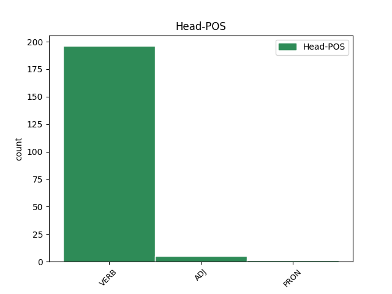
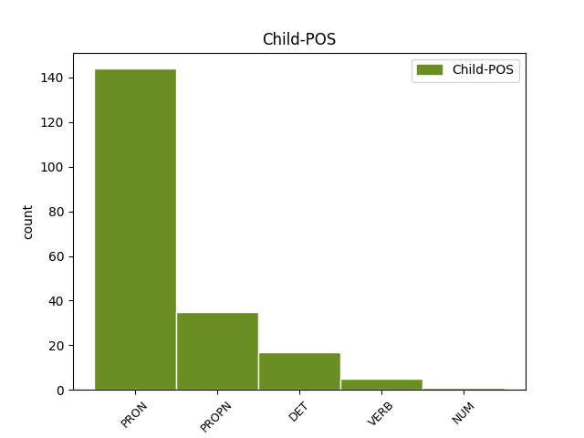

Distribution of features within this leaf



Agreement Rules sorted by frequency.
- When the dependent token is the direct object complements(comp:obj) of the head token, and the head token is VERB and the dependent token is PRON.
1 Грушами _ _ _ _ 0 _ _ _
2 я _ _ _ _ 0 _ _ _
3 її вона PRON Pp-3f-san Case=Acc|Gender=Fem|Number=Sing|Person=3|PronType=Prs 4 comp:obj _ Id=2ixf|LTranslit=vona|Translit=jiji
4 декорувала декорувати VERB Vmeis-sf Aspect=Perf|Gender=Fem|Mood=Ind|Number=Sing|Tense=Past|VerbForm=Fin 0 _ _ _
5 , _ _ _ _ 0 _ _ _
6 бо _ _ _ _ 0 _ _ _
7 лежали _ _ _ _ 0 _ _ _
8 поруч _ _ _ _ 0 _ _ _
9 на _ _ _ _ 0 _ _ _
10 столі _ _ _ _ 0 _ _ _
11 )) _ _ _ _ 0 _ _ _
1 — _ _ _ _ 0 _ _ _
2 Зараз _ _ _ _ 0 _ _ _
3 буде _ _ _ _ 0 _ _ _
4 біда _ _ _ _ 0 _ _ _
5 , _ _ _ _ 0 _ _ _
6 — _ _ _ _ 0 _ _ _
7 казав казати VERB Vmpis-sm Aspect=Imp|Gender=Masc|Mood=Ind|Number=Sing|Tense=Past|VerbForm=Fin 0 _ _ _
8 Микола _ _ _ _ 0 _ _ _
9 Максимові Максим PROPN Npmsdy Animacy=Anim|Case=Dat|Gender=Masc|NameType=Giv|Number=Sing 7 comp:obj _ Id=39cn|LTranslit=Maksym|SpaceAfter=No|Translit=Maksymovi
10 . _ _ _ _ 0 _ _ _
1 Мені _ _ _ _ 0 _ _ _
2 щиро _ _ _ _ 0 _ _ _
3 жаль _ _ _ _ 0 _ _ _
4 - _ _ _ _ 0 _ _ _
5 я _ _ _ _ 0 _ _ _
6 любила _ _ _ _ 0 _ _ _
7 Америку _ _ _ _ 0 _ _ _
8 ( _ _ _ _ 0 _ _ _
9 зараз _ _ _ _ 0 _ _ _
10 поставлю _ _ _ _ 0 _ _ _
11 собі _ _ _ _ 0 _ _ _
12 New _ _ _ _ 0 _ _ _
13 York _ _ _ _ 0 _ _ _
14 , _ _ _ _ 0 _ _ _
15 NY _ _ _ _ 0 _ _ _
16 у _ _ _ _ 0 _ _ _
17 виконанні _ _ _ _ 0 _ _ _
18 Сестер _ _ _ _ 0 _ _ _
19 Тельнюк _ _ _ _ 0 _ _ _
20 : _ _ _ _ 0 _ _ _
21 попрощатися _ _ _ _ 0 _ _ _
22 з _ _ _ _ 0 _ _ _
23 тою _ _ _ _ 0 _ _ _
24 , _ _ _ _ 0 _ _ _
25 яку який DET Pr--f-saa Case=Acc|Gender=Fem|Number=Sing|PronType=Rel 26 comp:obj _ Id=1pyl|LTranslit=jakyj|Translit=jaku
26 любила любити VERB Vmpis-sf Aspect=Imp|Gender=Fem|Mood=Ind|Number=Sing|Tense=Past|VerbForm=Fin 0 _ _ _
27 ) _ _ _ _ 0 _ _ _
28 . _ _ _ _ 0 _ _ _
1 Для _ _ _ _ 0 _ _ _
2 початку _ _ _ _ 0 _ _ _
3 , _ _ _ _ 0 _ _ _
4 він _ _ _ _ 0 _ _ _
5 зовсім _ _ _ _ 0 _ _ _
6 не _ _ _ _ 0 _ _ _
7 розумів розуміти VERB Vmpis-sm Aspect=Imp|Gender=Masc|Mood=Ind|Number=Sing|Tense=Past|VerbForm=Fin 0 _ _ _
8 з _ _ _ _ 0 _ _ _
9 якою _ _ _ _ 0 _ _ _
10 саме _ _ _ _ 0 _ _ _
11 метою _ _ _ _ 0 _ _ _
12 написав написати VERB Vmeis-sm Aspect=Perf|Gender=Masc|Mood=Ind|Number=Sing|Tense=Past|VerbForm=Fin 7 comp:obj _ Id=0528|LTranslit=napysaty|Translit=napysav
13 саме _ _ _ _ 0 _ _ _
14 1984 _ _ _ _ 0 _ _ _
15 . _ _ _ _ 0 _ _ _
Disagree Examples:
1 Ця _ _ _ _ 0 _ _ _
2 заввага _ _ _ _ 0 _ _ _
3 літературознавця _ _ _ _ 0 _ _ _
4 погано _ _ _ _ 0 _ _ _
5 корелює _ _ _ _ 0 _ _ _
6 зі _ _ _ _ 0 _ _ _
7 свідченням _ _ _ _ 0 _ _ _
8 самої _ _ _ _ 0 _ _ _
9 поетеси _ _ _ _ 0 _ _ _
10 у _ _ _ _ 0 _ _ _
11 листі _ _ _ _ 0 _ _ _
12 до _ _ _ _ 0 _ _ _
13 Ольги _ _ _ _ 0 _ _ _
14 Кобилянської _ _ _ _ 0 _ _ _
15 : _ _ _ _ 0 _ _ _
16 « _ _ _ _ 0 _ _ _
17 … _ _ _ _ 0 _ _ _
18 вчилась вчитися VERB Vmpis-sf Aspect=Imp|Gender=Fem|Mood=Ind|Number=Sing|Tense=Past|VerbForm=Fin 0 _ _ _
19 тільки _ _ _ _ 0 _ _ _
20 того те PRON Pd--nnsgn Animacy=Inan|Case=Gen|Gender=Neut|Number=Sing|PronType=Dem 18 comp:obj _ Id=00e7|LTranslit=te|SpaceAfter=No|Translit=toho
21 , _ _ _ _ 0 _ _ _
22 що _ _ _ _ 0 _ _ _
23 мені _ _ _ _ 0 _ _ _
24 подобалось _ _ _ _ 0 _ _ _
25 , _ _ _ _ 0 _ _ _
26 а _ _ _ _ 0 _ _ _
27 читала _ _ _ _ 0 _ _ _
28 все _ _ _ _ 0 _ _ _
29 , _ _ _ _ 0 _ _ _
30 що _ _ _ _ 0 _ _ _
31 запорву _ _ _ _ 0 _ _ _
32 , _ _ _ _ 0 _ _ _
33 без _ _ _ _ 0 _ _ _
34 жадної _ _ _ _ 0 _ _ _
35 заборони _ _ _ _ 0 _ _ _
36 . _ _ _ _ 0 _ _ _
1 Ця _ _ _ _ 0 _ _ _
2 заввага _ _ _ _ 0 _ _ _
3 літературознавця _ _ _ _ 0 _ _ _
4 погано _ _ _ _ 0 _ _ _
5 корелює _ _ _ _ 0 _ _ _
6 зі _ _ _ _ 0 _ _ _
7 свідченням _ _ _ _ 0 _ _ _
8 самої _ _ _ _ 0 _ _ _
9 поетеси _ _ _ _ 0 _ _ _
10 у _ _ _ _ 0 _ _ _
11 листі _ _ _ _ 0 _ _ _
12 до _ _ _ _ 0 _ _ _
13 Ольги _ _ _ _ 0 _ _ _
14 Кобилянської _ _ _ _ 0 _ _ _
15 : _ _ _ _ 0 _ _ _
16 « _ _ _ _ 0 _ _ _
17 … _ _ _ _ 0 _ _ _
18 вчилась _ _ _ _ 0 _ _ _
19 тільки _ _ _ _ 0 _ _ _
20 того _ _ _ _ 0 _ _ _
21 , _ _ _ _ 0 _ _ _
22 що _ _ _ _ 0 _ _ _
23 мені _ _ _ _ 0 _ _ _
24 подобалось _ _ _ _ 0 _ _ _
25 , _ _ _ _ 0 _ _ _
26 а _ _ _ _ 0 _ _ _
27 читала читати VERB Vmpis-sf Aspect=Imp|Gender=Fem|Mood=Ind|Number=Sing|Tense=Past|VerbForm=Fin 0 _ _ _
28 все все PRON Pg--nnsan Animacy=Inan|Case=Acc|Gender=Neut|Number=Sing|PronType=Tot 27 comp:obj _ Id=00ef|LTranslit=vse|SpaceAfter=No|Translit=vse
29 , _ _ _ _ 0 _ _ _
30 що _ _ _ _ 0 _ _ _
31 запорву _ _ _ _ 0 _ _ _
32 , _ _ _ _ 0 _ _ _
33 без _ _ _ _ 0 _ _ _
34 жадної _ _ _ _ 0 _ _ _
35 заборони _ _ _ _ 0 _ _ _
36 . _ _ _ _ 0 _ _ _
1 « _ _ _ _ 0 _ _ _
2 Що _ _ _ _ 0 _ _ _
3 ж _ _ _ _ 0 _ _ _
4 до _ _ _ _ 0 _ _ _
5 мене _ _ _ _ 0 _ _ _
6 , _ _ _ _ 0 _ _ _
7 – _ _ _ _ 0 _ _ _
8 звірялася звірятися VERB Vmpis-sf Aspect=Imp|Gender=Fem|Mood=Ind|Number=Sing|Tense=Past|VerbForm=Fin 0 _ _ _
9 Михайлові Михайло PROPN Npmsdy Animacy=Anim|Case=Dat|Gender=Masc|NameType=Giv|Number=Sing 8 comp:obj _ Id=0112|LTranslit=Mychajlo|Translit=Mychajlovi
10 Драгоманову _ _ _ _ 0 _ _ _
11 , _ _ _ _ 0 _ _ _
12 – _ _ _ _ 0 _ _ _
13 то _ _ _ _ 0 _ _ _
14 я _ _ _ _ 0 _ _ _
15 тільки _ _ _ _ 0 _ _ _
16 генієві _ _ _ _ 0 _ _ _
17 можу _ _ _ _ 0 _ _ _
18 простить _ _ _ _ 0 _ _ _
19 кепсько _ _ _ _ 0 _ _ _
20 збудований _ _ _ _ 0 _ _ _
21 вірш _ _ _ _ 0 _ _ _
22 , _ _ _ _ 0 _ _ _
23 та _ _ _ _ 0 _ _ _
24 й _ _ _ _ 0 _ _ _
25 то _ _ _ _ 0 _ _ _
26 не _ _ _ _ 0 _ _ _
27 завжди _ _ _ _ 0 _ _ _
28 . _ _ _ _ 0 _ _ _
1 Внизу _ _ _ _ 0 _ _ _
2 , _ _ _ _ 0 _ _ _
3 по _ _ _ _ 0 _ _ _
4 землі _ _ _ _ 0 _ _ _
5 , _ _ _ _ 0 _ _ _
6 слався _ _ _ _ 0 _ _ _
7 мох _ _ _ _ 0 _ _ _
8 , _ _ _ _ 0 _ _ _
9 пообростав пообростати VERB Vmeis-sm Aspect=Perf|Gender=Masc|Mood=Ind|Number=Sing|Tense=Past|VerbForm=Fin 0 _ _ _
10 усе усе PRON Pg--nnsan Animacy=Inan|Case=Acc|Gender=Neut|Number=Sing|PronType=Tot 9 comp:obj _ Id=033h|LTranslit=use|SpaceAfter=No|Translit=use
11 , _ _ _ _ 0 _ _ _
12 що _ _ _ _ 0 _ _ _
13 тільки _ _ _ _ 0 _ _ _
14 можна _ _ _ _ 0 _ _ _
15 . _ _ _ _ 0 _ _ _
1 Бурундук _ _ _ _ 0 _ _ _
2 зіскочив _ _ _ _ 0 _ _ _
3 на _ _ _ _ 0 _ _ _
4 стежечку _ _ _ _ 0 _ _ _
5 , _ _ _ _ 0 _ _ _
6 щось щось PRON Pi--nnsan Animacy=Inan|Case=Acc|Gender=Neut|Number=Sing|PronType=Ind 7 comp:obj _ Id=03b2|LTranslit=ščoś|Translit=ščoś
7 поворожив поворожити VERB Vmeis-sm Aspect=Perf|Gender=Masc|Mood=Ind|Number=Sing|Tense=Past|VerbForm=Fin 0 _ _ _
8 , _ _ _ _ 0 _ _ _
9 пройшовся _ _ _ _ 0 _ _ _
10 сюди _ _ _ _ 0 _ _ _
11 - _ _ _ _ 0 _ _ _
12 туди _ _ _ _ 0 _ _ _
13 і _ _ _ _ 0 _ _ _
14 враз _ _ _ _ 0 _ _ _
15 , _ _ _ _ 0 _ _ _
16 тривожно _ _ _ _ 0 _ _ _
17 цикнувши _ _ _ _ 0 _ _ _
18 , _ _ _ _ 0 _ _ _
19 стрімголов _ _ _ _ 0 _ _ _
20 вискочив _ _ _ _ 0 _ _ _
21 на _ _ _ _ 0 _ _ _
22 кедрину _ _ _ _ 0 _ _ _
23 , _ _ _ _ 0 _ _ _
24 на _ _ _ _ 0 _ _ _
25 пень _ _ _ _ 0 _ _ _
26 , _ _ _ _ 0 _ _ _
27 звідти _ _ _ _ 0 _ _ _
28 на _ _ _ _ 0 _ _ _
29 дубок _ _ _ _ 0 _ _ _
30 . _ _ _ _ 0 _ _ _